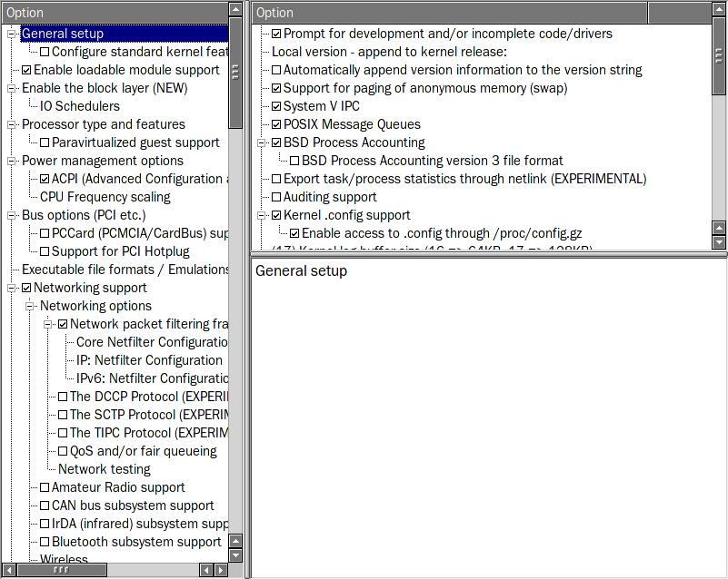
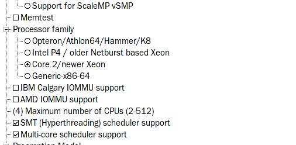
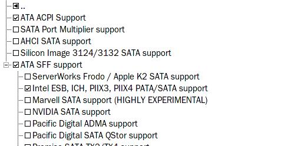
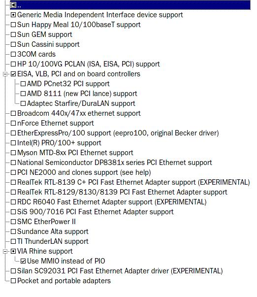
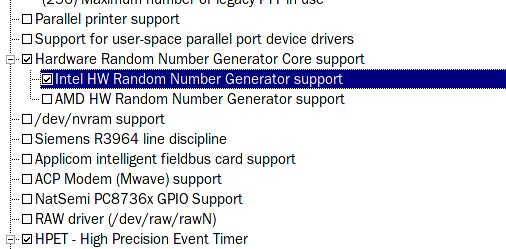
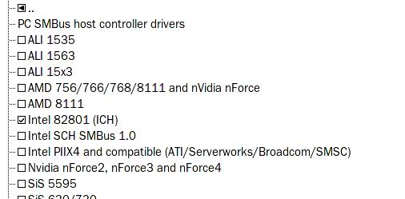
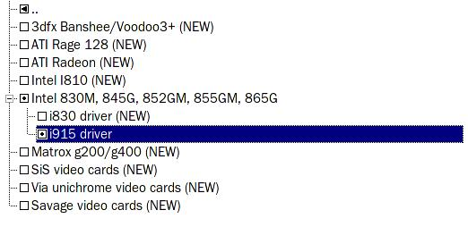
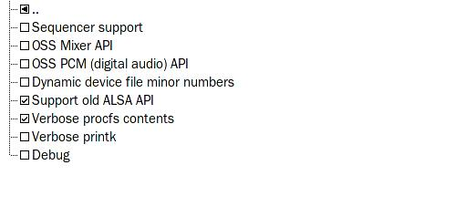
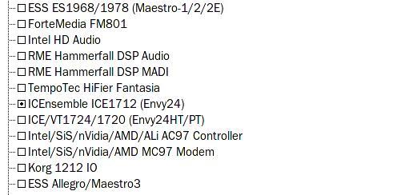
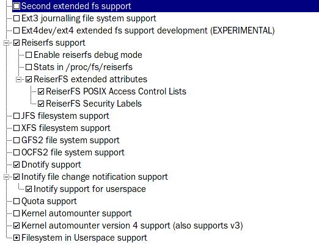

Seeds are not bootable out of the box. Let me say that again, a Kernel Seed, fresh from the site, will not boot. They have to be configured by yourself in order to do anything. You have to add your list of hardware devices to the Seed and compile it. To get the information, execute the following commands: lspci -n, and cat /proc/cpuinfo. Keep that information handy. You'll be using it soon.
Working with Kernel Seeds, hereafter known as Seeds, is like working with any other kernel with one exception: with Kernel Seeds, you are provided a stable base upon which you build a functional computer. Effectively, they are my sane make defconfig for the real world.
In order to use the Seeds, the first step is to install the kernel source you desire. For the Gentoo Linux user, you have numerous choices. You can install many different kernels versions directly from portage. You can get source directly from kernel.org. You can make up custom source with patches.
Since the best way to learn is by example, let's take a look at one. This information is from my system, Core-too; an amd64 system running on a Core2 Duo 2.33GHz chip. I will be configuring a 2.6.27-gentoo-r8 kernel.
core-too ~ # lspci -n 00:00.0 0600: 8086:2770 (rev 02) 00:01.0 0604: 8086:2771 (rev 02) 00:1c.0 0604: 8086:27d0 (rev 01) 00:1d.0 0c03: 8086:27c8 (rev 01) 00:1d.1 0c03: 8086:27c9 (rev 01) 00:1d.2 0c03: 8086:27ca (rev 01) 00:1d.3 0c03: 8086:27cb (rev 01) 00:1d.7 0c03: 8086:27cc (rev 01) 00:1e.0 0604: 8086:244e (rev e1) 00:1f.0 0601: 8086:27b8 (rev 01) 00:1f.1 0101: 8086:27df (rev 01) 00:1f.2 0101: 8086:27c0 (rev 01) 00:1f.3 0c05: 8086:27da (rev 01) 01:00.0 0200: 1106:3043 (rev 06) 01:01.0 0401: 1412:1712 (rev 02) 03:00.0 0300: 10de:01d3 (rev a1) core-too ~ #
core-too ~ # cat /proc/cpuinfo processor : 0 vendor_id : GenuineIntel cpu family : 6 model : 15 model name : Intel(R) Core(TM)2 Duo CPU E6550 @ 2.33GHz stepping : 10 cpu MHz : 2331.000 cache size : 4096 KB physical id : 0 siblings : 2 core id : 0 cpu cores : 2 apicid : 0 initial apicid : 0 fpu : yes fpu_exception : yes cpuid level : 10 wp : yes flags : fpu vme de pse tsc msr pae mce cx8 apic sep mtrr pge mca cmov pat pse36 clflush dts acpi mmx fxsr sse sse2 ss ht tm pbe syscall nx lm constant_tsc arch_perfmon pebs bts rep_good pni dtes64 monitor ds_cpl vmx smx est tm2 ssse3 cx16 xtpr pdcm lahf_lm tpr_shadow vnmi flexpriority bogomips : 5053.84 clflush size : 64 cache_alignment : 64 address sizes : 36 bits physical, 48 bits virtual power management: processor : 1 vendor_id : GenuineIntel cpu family : 6 model : 15 model name : Intel(R) Core(TM)2 Duo CPU E6550 @ 2.33GHz stepping : 10 cpu MHz : 2331.000 cache size : 4096 KB physical id : 0 siblings : 2 core id : 1 cpu cores : 2 apicid : 1 initial apicid : 1 fpu : yes fpu_exception : yes cpuid level : 10 wp : yes flags : fpu vme de pse tsc msr pae mce cx8 apic sep mtrr pge mca cmov pat pse36 clflush dts acpi mmx fxsr sse sse2 ss ht tm pbe syscall nx lm constant_tsc arch_perfmon pebs bts rep_good pni dtes64 monitor ds_cpl vmx smx est tm2 ssse3 cx16 xtpr pdcm lahf_lm tpr_shadow vnmi flexpriority bogomips : 5053.97 clflush size : 64 cache_alignment : 64 address sizes : 36 bits physical, 48 bits virtual power management: core-too ~ #
core-too ~ # cat /etc/fstab none /proc proc defaults 0 0 none /dev/shm tmpfs defaults 0 0 /dev/sdb1 / reiserfs defaults 1 1 /dev/sdb2 none swap swap 0 0 /dev/sda1 /mnt/WinXP ntfs-3g defaults 1 0 core-too ~ #
1) Take the results of lspci -n and paste them at the following site: http://kmuto.jp/debian/hcl/. With my example, the page would look like this:
Pressing the "Check" button produces this result:
Now you have all the needed information to configure your kernel. I personally use make xconfig, so all the examples will be make xconfig screenshots.
2) cd /usr/src/linux-2.6.27-gentoo-r8
3) make xconfig. You will be greeted by the following screen:

This page is preset as a part of my Seeds. As a matter of course, I ask you not to change settings on this page unless you know what you're doing. Even then, if you must go there, don't turn on anything with the word "group" and the initials CPU!
Note: With make xconfig, the check mark means "yes", and the bullet dot means "module" as you will see presently. For size considerations, I'll only show partial xconfig panels from this point.
The first stop is Processor type and features. Since cat /proc/cpuinfo told me I have an Intel Core2 Duo processor, I need to make sure the kernel is informed.

Next, move down the left side of the make xconfig screen to the first actual device to install: the hard drive controller. I use the Serial ATA (prod) and Parallel ATA (experimental) drivers (ATA) drivers, hereafter called libata drivers since I have an Intel SATA interface. The libata drivers can be used just as well on machines without any SATA devices. I personally recommend making the switch.

Note: For this, as with all drivers, it's best to pick only the driver you need.
The next device to install is the net card. Since I'm using a Via Rhine 10/100 knock-off, I'd want to go to the Ethernet (10 or 100Mbit) (NET_ETHERNET) section, and select VIA Rhine support (VIA_RHINE), as in the example below.

Note: in general, it is desireable to set up your network devices as modules, as in the example above. This is especially true for wireless. Most wireless drivers simply will not function when compiled into the kernel. They must be modules.
The next thing that needs to be set is the random number generator. That shows up under Character devices.

Next, move down to I2C Hardware Bus support under I2C support (I2C).

Next, move down to Hardware Monitoring support and turn on the Intel Core (2) Duo/Solo temperature sensor (SENSORS_CORETEMP) module, since the machine has a core2 chip.
Next, move down to Graphics support. If you are running an nVidia card, you don't need to do anything here. I believe you can also ignore this section if you're using ATI drivers.
If you are running an Intel video card, you would want to make the following changes:
Under /dev/agpart (AGP Support), turn on Intel 440LX/BX/GX, I8xx and E7x05 chipset support (AGP_INTEL). Don't set as module.
Under Direct Rendering Manager (XFree86 4.1.0 and higher DRI support) (DRM), check the following:

For stability's sake, it's best to compile this in, and compile it as i915, even with an i830 video chip. Libdrm and xf86-video-intel will sort it out, and set the video properly.
IMPORTANT INFORMATION CHANGE:
Note that Intel GPU users should use the VESA VGA frame buffer. The intelfb driver has become quite unstable since the time of the original writing of this document. KMS (Enable modesetting on intel by default) is NOT recommended.
The last major device on the list would be the soundcard. I use a very simple setup with my sound card as it doesn't support MIDI. Therefore, I don't need to set it up to use a synth of any kind. Generally speaking though, the first three settings under Advanced Linux Sound Architecture (SND) are set as modules, and the fourth option, Dynamic device minor numbers is set as yes. See below.

When setting up the actual sound card driver under PCI sound devices (SND_PCI), configure it as a module, like the example below. This is how Gentoo does it.

The final setting is the File sytstems settings. If you're using ext2, ext3, or reiserfs, you don't have to set up the file systems in a Seed. All three file systems have been selected by default. If you wish to use any other file system, you have to change that in this portion of the kernel. Also, I recommend turning off unused file system support. Following those rules of thumb, this page will wind up looking like this:

Note: Filesystem in Userspace support (FUSE_FS), if desired, should always be set as module.
4) Take a second look through the make xconfig screens to make sure there are no mistakes. When satisfied, exit make xconfig and compile the kernel.
1) make && make modules_install.
2) cp /usr/src/linux-2.6.27-gentoo-r8/arch/x86/boot/bzImage /boot/vmlinuz-2.6.27-gentoo-r8.
3) Set up /etc/lilo.conf or /boot/grub.conf to boot the new kernel.
4) If you are using lilo, don't forget to invoke lilo once you have things set up right.
5) Reboot.
6) Check out /var/log/dmesg to make sure your drivers loaded without errors.
For reference, here is the finished kernel .config, sans the Intel video settings.
Blessed be!
Pappy